傍晚時分，爸媽的房門打開，爸爸走出來，穿著輕便的戶外服裝，手裡拿著一台相機。

晚上10點，一家人來到大甲鎮瀾宮前廣場，已經是人山人海。媽媽拿著香旗，虔誠地祈福。
爸爸默默站在旁邊，也跟著雙手合十，但眼神飄向遠處的隊伍。

「10點05分了！！」人群中有人喊著。鞭炮聲響起，鑼鼓喧天，媽祖起駕了！

經過著名的犁頭店歷史街區，古色古香的建築，路上滿是信徒。

走到七里香豆乳店門口，棉花糖已經累到不行。
爸爸看在眼裡，默默按下快門，捕捉這個畫面。

晚上9點，終於抵達沙鹿。大家都累了。
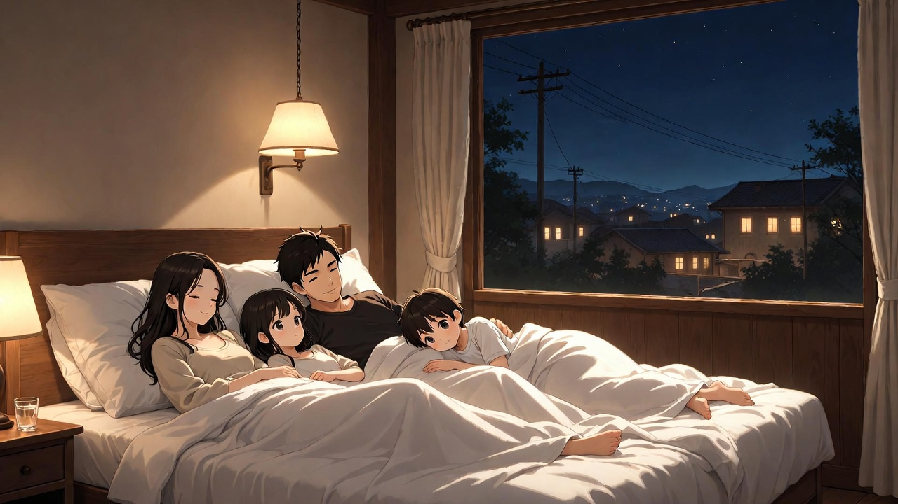
洗完澡，一家人躺在床上聊天。

抵達彰化火車站，古老的建築充滿歷史感。

參觀扇形車庫，驚嘆鐵道文化。
爸爸瘋狂按快門，捕捉這個畫面。

抵達南瑤宮，巨大的廟宇氣勢非凡。

阿布吉幫棉花糖拿背包，減輕他的負擔。
爸爸在後面看著兩個兒子，心裡很欣慰。
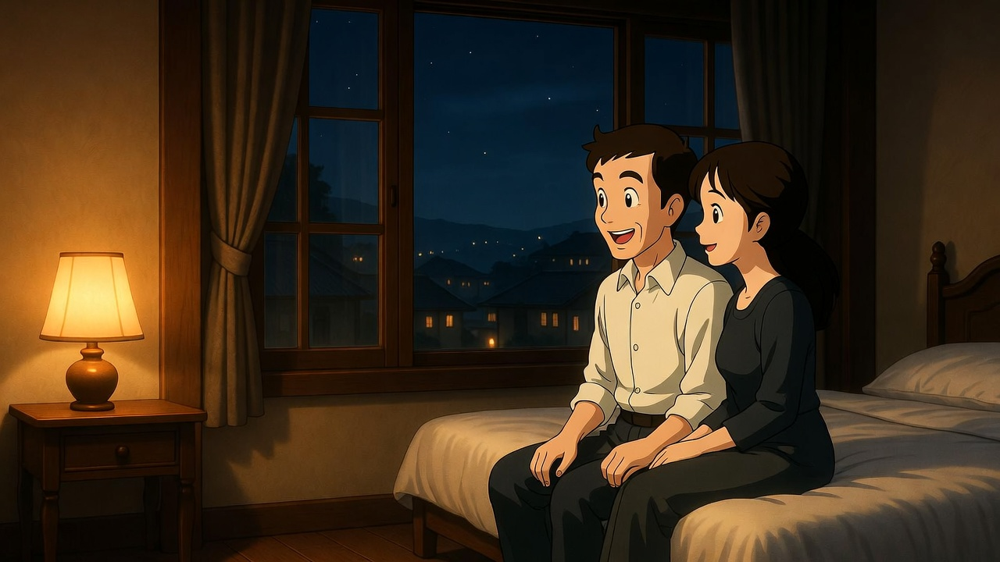
晚上睡覺前，爸媽在聊天。
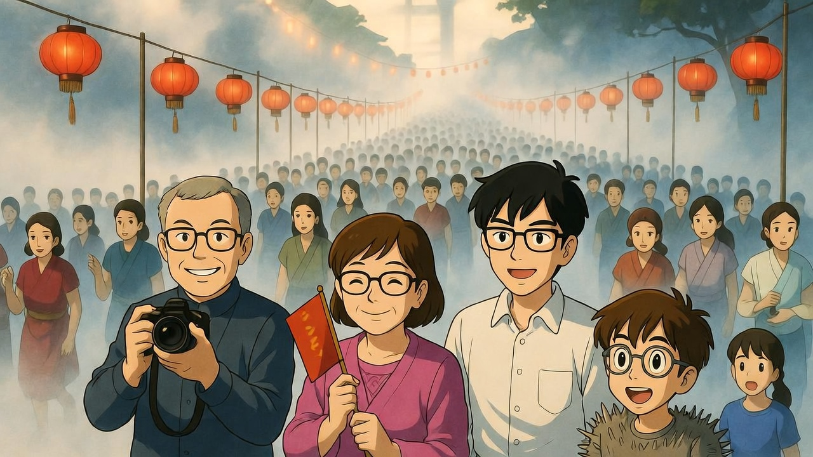
清晨的龍井，天還沒全亮，但已經很多人。
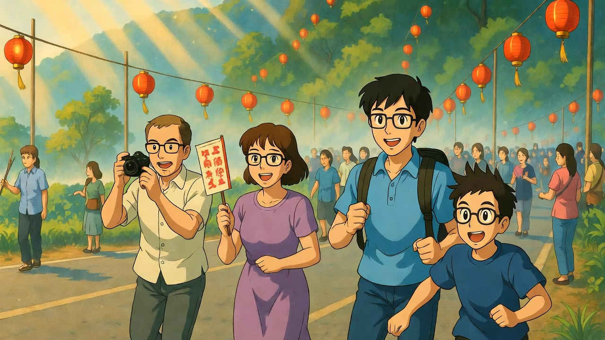
清晨陽光下，一家人出發，風景優美。
媽媽看在眼裡，默默微笑。
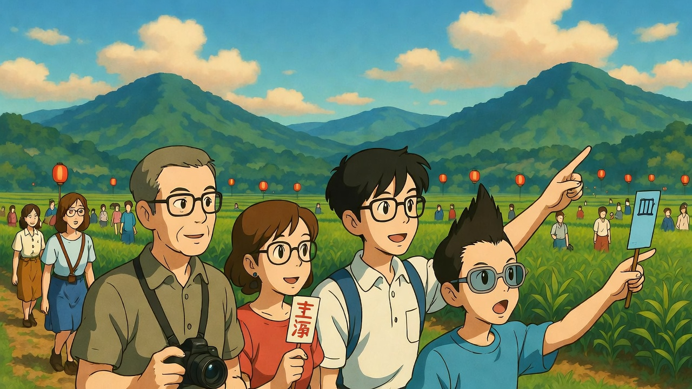
經過龍井的田野，稻田綠油油一片。

抵達清水朝興宮，一家人參拜。
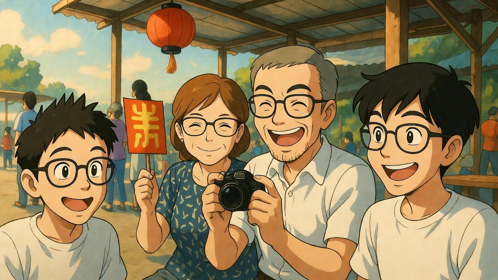
今天大家有說有笑，氣氛輕鬆。
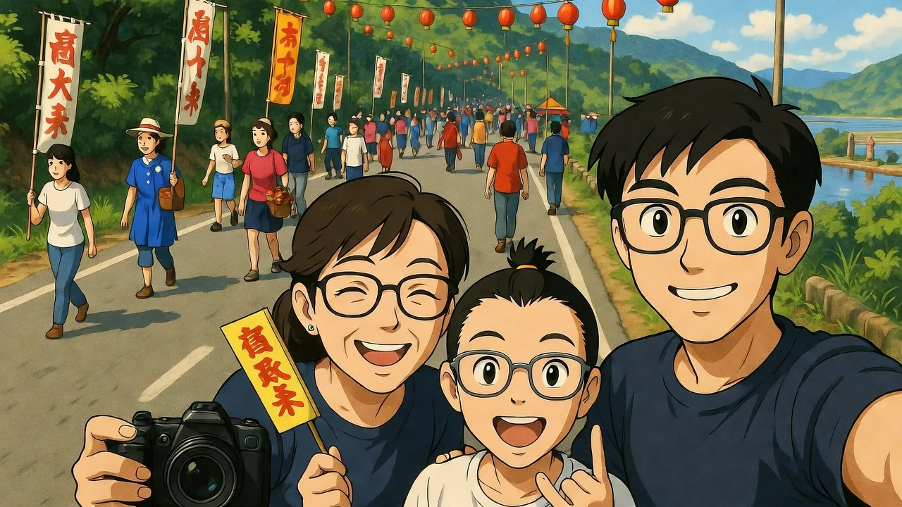
爸爸提議：「來，我們拍一張！」
一家人站在路邊，背景是遶境隊伍。
照片裡，每個人都笑得很開心。
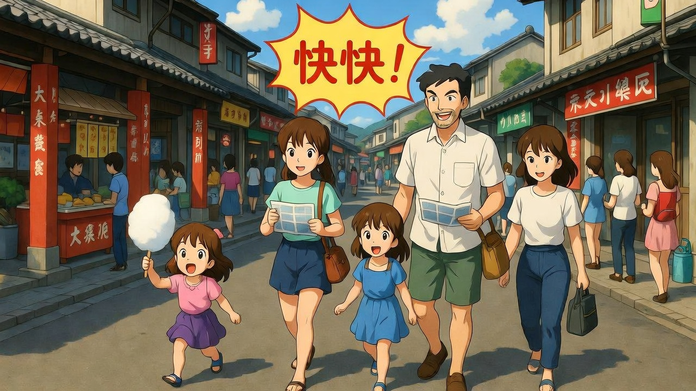
中午12點就結束了，比昨天早很多。
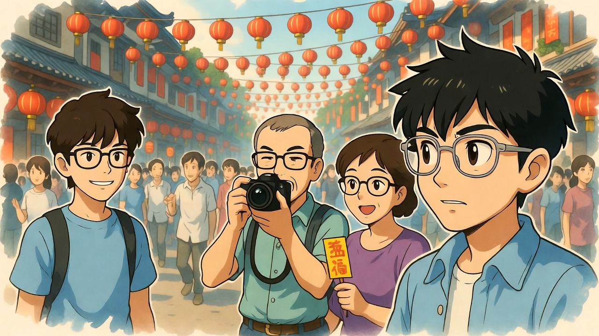
清晨6點30分，最後一天，全家既期待又不捨。
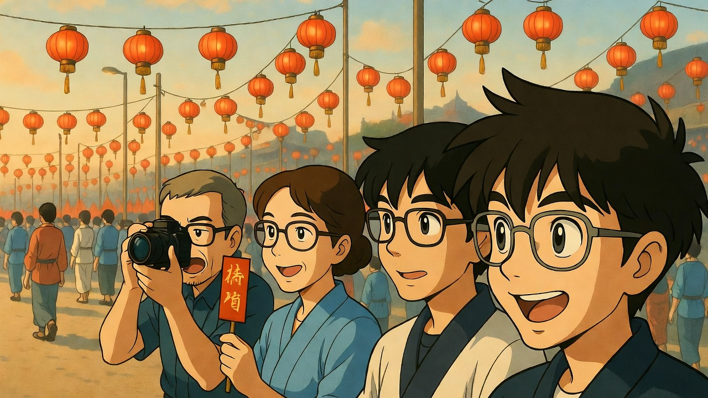
從台中港出發，天空很藍。
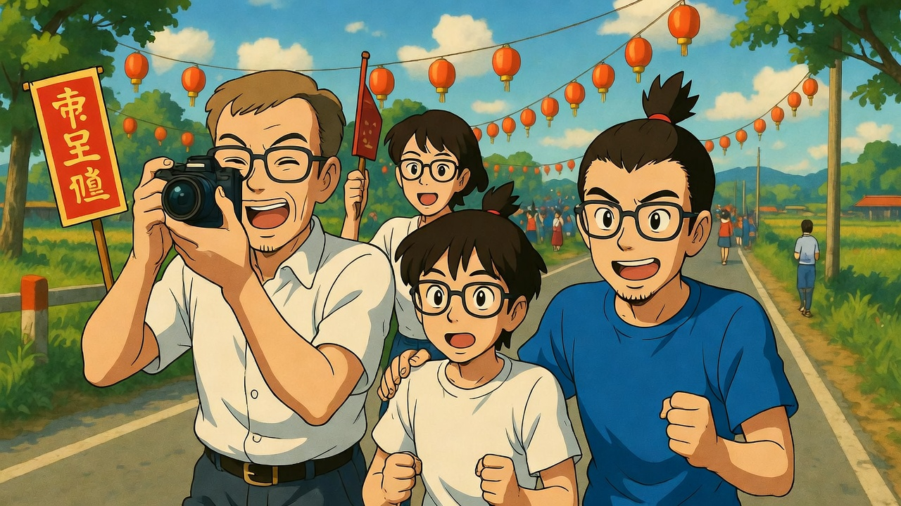
最後一段路，棉花糖突然感性起來。
爸爸按下快門，捕捉這個畫面。

抵達大甲鎮瀾宮，進行回鑾儀式。

媽媽帶全家鞠躬感謝。

阿布吉難得感性：
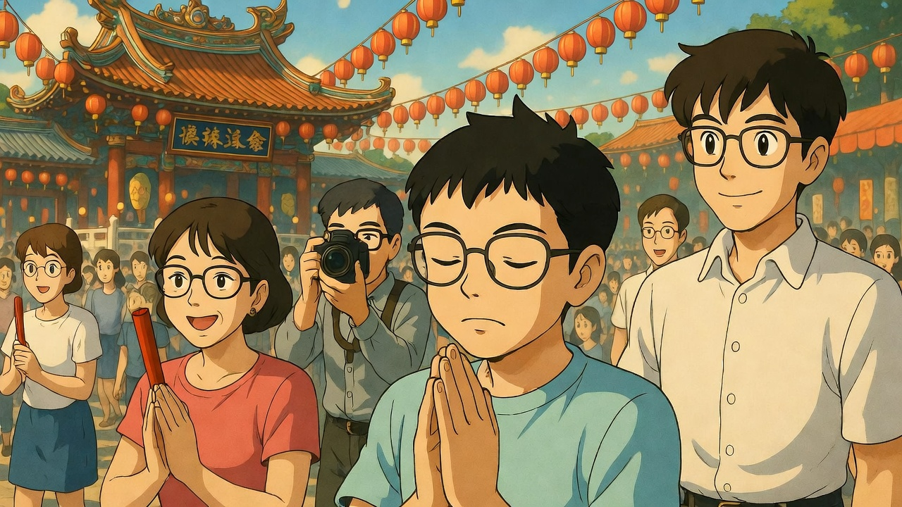
棉花糖突然說：
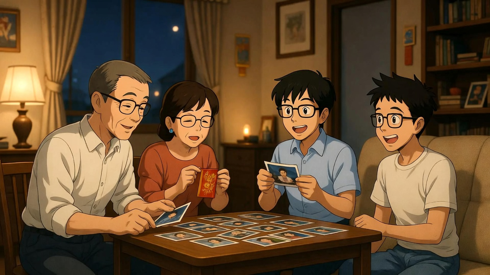
回到家，一家人癱在客廳沙發上。
客廳裡充滿歡笑聲，這幾天的回憶，會永遠記在心裡。